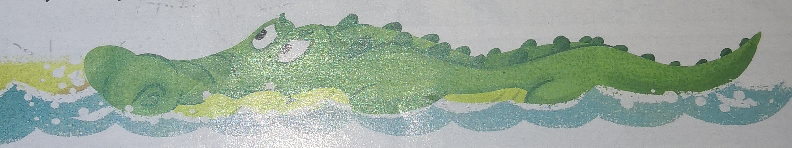

Художник Вера зайцева
Автор Мария Большакова
Знаете, кто самый злой зверь в Африке? Ну, конечно, знаете. Крокодил, кто же ещё! Злой зелёный крокодил. Целыми днями лежит в реке и злится:
- Вода мокрая! Солнце жаркое и Африка эта ваша какая-то... какая-то... не такая!
- Как это не такая? - удивился гуляющий по берегу слон. Хорошая Африка, очень даже африканская.
- Носатых не спрашивали!- сердится крокодил.- Ходют тут всякие, воду мою пьют и ушами солнце загораживают.
Слон оттошёл подальше и ничего не ответил. Не то чтобы он этого зеленого злюку опасался, просто не хотелось настроение портить. Крокодил же только и ждет, с ем бы сцепитьс. Он уже и ругательств заготовил вагон и маленькую тележку, а слон в жизни ни с кем не ругался. Не такое у него воспитание. Слон отошёл, а крокодил ещё больше разозлился. Лежит, глазами зыркает, ищет, с кем бы ещё поругаться. А тут как раз зебра решила искупаться.
- Эй, полосатая! - обрадовался крокодил. - Ну-ка, брысь от моей реки. А то укушу!
-Ой!- только и пискнула в ответ зебра.
- Не ойкай мне тут! И в воду не заходи. Можешь не врать, что ты
белая в черную полоску. Учёные про тебя все выяснили.
На самом деле ты черная! А белыми полосками только прикрываешься.- Зачем ты так? - заплакала зебра и засеменила прочь.
- А крокодил ещё и подгоняет:
- Давай-давай, чеши отсюдова,
пока мне всю воду не пере-
пачкала. Грязнуля-
чернозюля!